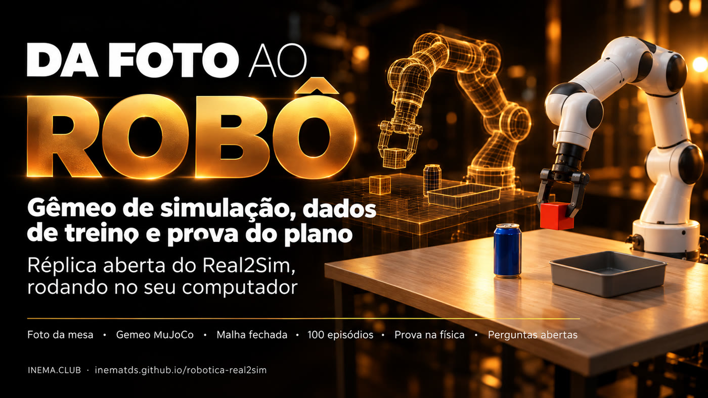
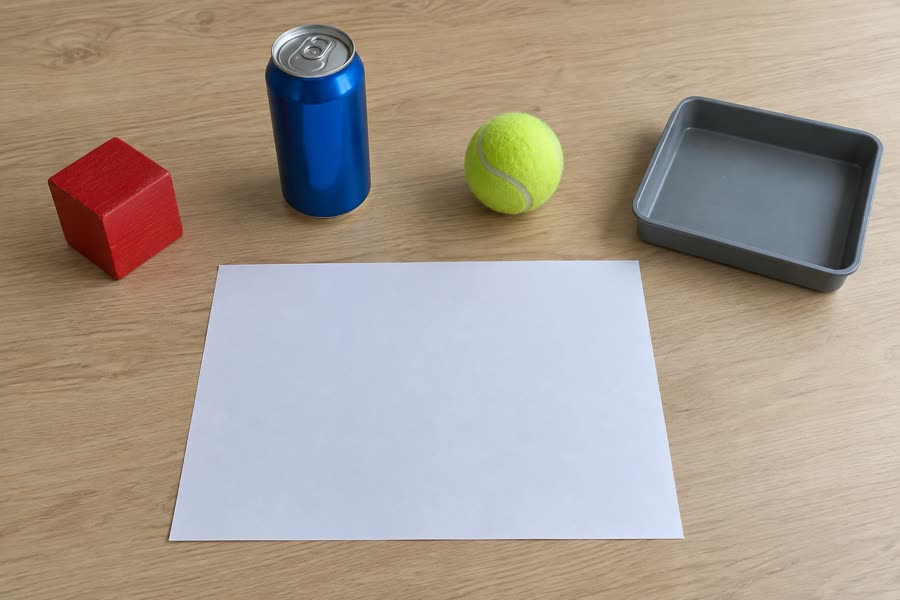
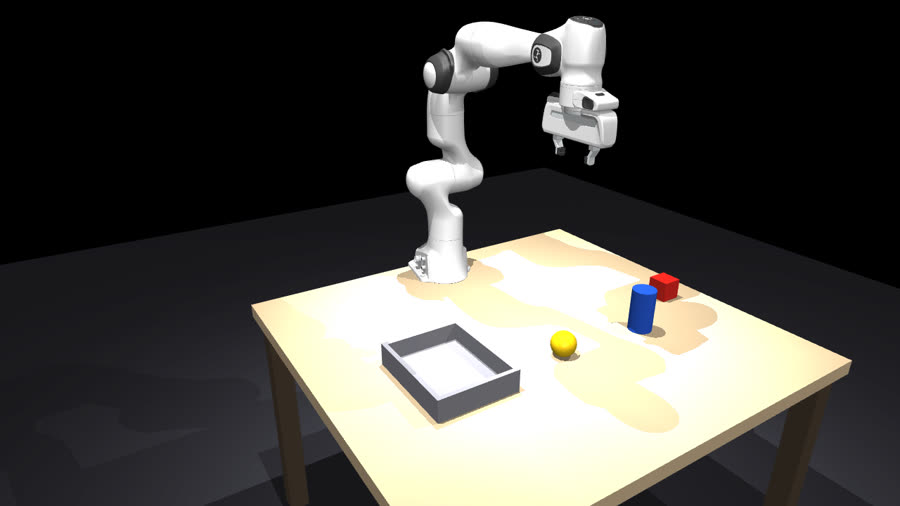

Uma foto vira gêmeo de simulação, o gêmeo gera dados de treino rotulados e o plano só vai para o robô real depois de passar na física.

O robotica-real2sim é um projeto aberto que reproduz no seu computador a ideia que o Google mostrou na parte de robótica do Gemini 4 Argon: tirar uma foto de uma mesa e transformá-la numa simulação física onde um braço robótico treina. Serve para quem quer entender e testar robótica com IA sem ter robô. Ele monta o "gêmeo" da mesa, gera dezenas de tentativas rotuladas para treino e testa cada plano na simulação antes de mandá-lo a um robô real. Precisa de Python, do MuJoCo (simulador gratuito) e, para ler a foto, do Codex.
O gargalo da robótica sempre foi dado: gente de óculos de VR guiando o braço por horas. Aqui o dado sai da simulação, e a simulação sai de uma foto.
Um modelo de visão lê a foto, mede os objetos usando uma folha A4 como régua e monta a cena no MuJoCo com o braço Franka Panda.
Um gerador de movimento em malha fechada pega e solta cada objeto com variações; cada tentativa sai com anotação em 4 níveis e selo de qualidade.
O plano escrito pela IA roda 20 vezes na física. Abaixo de 90% de acerto, ele é reprovado e não chega ao robô.
Cada etapa é um comando do r2s.py e grava um arquivo que você pode abrir e conferir.
A cada 20 ms o gerador lê onde o objeto está e recalcula o alvo. Se o objeto se mexe, o braço corrige. É o que o Google chama de closed-loop IK trajectory generator.
Objetivo → subtarefas (pegar, levar, soltar) → primitivas com início e fim → eventos (contato dos dois dedos, objeto levantado, sucesso).
Cada episódio sorteia posição (±4 cm), giro, massa (±30%). Um modelo treinado nisso aprende a lidar com o mundo que não é igual à foto.
Publicado em 13/10/2026. O post é uma coleção de exemplos com vídeo; fontes completas em docs/PESQUISA.md.
gemini-4-argon, US$ 2 / US$ 10 por milhão de tokens no preço de lançamento) e no Antigravity.| Exemplo | O que acontece | Número |
|---|---|---|
| Uma foto → VLA melhor | Foto de uma bancada com 2 braços Franka FR3 vira gêmeo MuJoCo, 77 tarefas, gerador IK em malha fechada, 4.500+ episódios para ajustar um VLA | 56% → 75% de sucesso no robô real; 35 s → 24 s |
| ERQA | Benchmark de raciocínio incorporado | 87%, acima dos outros modelos de fronteira |
| Spot | Cria o gêmeo de uma lixeira com pedal, treina o equilíbrio em 3 patas no MuJoCo e só então pisa no pedal real | sem taxa publicada |
| SO-101 | Braço barato melhora a própria tarefa olhando logs e vídeo, sob regras de um AGENTS.md | 58,9 s → 22,9 s → 17,4 s |
| ALOHA 2 | Origami de 136 s anotado em 4 níveis com controle de qualidade | 1 objetivo, 6 subtarefas, 17 primitivas |
| DroneBench (Andon Labs) | Modelos escrevem o código para um drone de US$ 129 achar e seguir uma pessoa | melhor modelo a 84% do caminho; ninguém fecha as 5 tarefas |
Roda em Linux, macOS e WSL. Testado num ARM de 20 núcleos com GPU (renderização por EGL).
O instalador cria o ambiente e baixa o Panda do MuJoCo Menagerie.
# conferir python3 --version && git --version
Em servidor ou WSL, o MuJoCo desenha pela GPU. Sem GPU, use osmesa.
# padrão do projeto export MUJOCO_GL=egl
Só para ler a foto e escrever o plano. Sem ele, escreva a cena à mão.
# uma vez codex login
Comandos reais. Cada um imprime o que fez e grava o resultado.
Cria o .venv, instala o MuJoCo, baixa o Franka Panda e roda os 8 testes (~11 s).
git clone https://github.com/inematds/robotica-real2sim && cd robotica-real2sim ./instalar.sh # termina em "TUDO OK"
Fotografe a mesa de cima, com uma folha A4 visível como régua. O modelo devolve cada objeto com tipo, tamanho e posição; o script converte para o referencial do braço e avisa se precisou aproximar algo do alcance.
./r2s.py foto minha-mesa.jpg cena.json --pedido "pôr o cubo vermelho na bandeja" # cena: 4 objetos -> cena.json ./r2s.py ver cena.json gemeo.png --camera cima # compare com a foto
Filma um episódio com três câmeras (geral, de cima e no pulso) e a fase escrita na tela.
./r2s.py filmar cena.json episodio.mp4 --cameras geral,cima,pulso # sucesso: objeto dentro do destino (269 quadros)
N episódios com variação. --imagens grava também as câmeras de cima e do pulso (128×128, 10 Hz). Episódio que falhou fica com peso_no_treino: 0.
./r2s.py episodios cena.json dados/ -n 50 --imagens # 50/50 episódios com sucesso (100%) em 12.4 s
O Codex lê a cena e devolve passos pegar → destino. O script recusa plano que cite objeto inexistente ou destino que não é recipiente.
./r2s.py planejar cena.json "arrume a mesa: tudo que é redondo vai para a bandeja" plano.json # pegar lata_azul -> bandeja_cinza # pegar bola_tenis -> bandeja_cinza
O plano roda 20 vezes com variação. Sem vagas, a bola cai em cima da lata. Com uma vaga por objeto (padrão), passa.
./r2s.py provar cena.json plano.json --sem-vagas # plano completo em 4/20 (20%) -> REPROVADO: não mande ao robô ./r2s.py provar cena.json plano.json # plano completo em 19/20 (95%) -> APROVADO para o robô real
Arquivos em resultados/. A foto de exemplo foi gerada por IA.


| Medida | Resultado |
|---|---|
| Episódios na cena da foto (cubo → bandeja, com variação) | 50/50 em 12,4 s |
| Episódios na cena de teste | 50/50 em 10,3 s |
| Cada objeto sozinho (cubo, lata, bola × 2 cenas, 20 variações) | 20/20 em todos |
| Plano "tudo que é redondo vai para a bandeja", sem vagas | 4/20 (20%) → reprovado |
| Mesmo plano com uma vaga por objeto | 19/20 (95%) → aprovado |
Até a lata funcionar, a simulação errou de três jeitos: pegada alta demais enfiava a lata na palma, o contato cilindro × dedo empurrava na direção errada e a garra do modelo apertava só ~3 N (a real faz 70 N). Cada erro daria um número falso. É por isso que gêmeo precisa ser conferido.
Codex, Claude, Gemini Robotics-ER 2 e Gemini 4 Argon montaram a cena da mesma foto e escreveram o plano para o mesmo pedido. A física decidiu. Dados completos em docs/CODEX-VS-CLAUDE.md.
| Modelo | Via | Foto → cena: entrada / saída | Plano: entrada / saída | Custo | Cubo–bandeja | Prova sem / com vagas |
|---|---|---|---|---|---|---|
| Codex gpt-6-luna | codex exec | 26.760 / 279 | 24.741 / 100 | assinatura | 78 cm | 4/20 / 19/20 |
| Claude claude-opus-5-5 | claude -p | 174.040 / 3.928 111.596 cache | 116.476 / 662 20.936 cache | assinatura | 48 cm | 16/20 / 16/20 |
| Gemini Robotics-ER 2 gemini-robotics-er-2-preview | Gemini API | 1.600 / 433 +1.538 raciocínio | 377 / 70 +1.145 raciocínio | US$ 0 · grátis | 45 cm | 0/20 / 16/20 |
| Gemini 4 Argon google/gemini-4-argon | OpenRouter | 1.614 / 542 | 389 / 72 | US$ 0,0101 | 41 cm | 7/20 / 20/20 |
A prova sorteava posição, giro e massa, nunca o tamanho. Se a visão erra a medida, a simulação aprova o erro. Agora --var-tamanho 0.15 e --pior-caso rodam a física com a bandeja até 15% menor e mais rasa, e cada ordem de plano rodou na cena de cada modelo. Relatório completo em docs/ERRO-DE-MEDIDA.md.
| Cena (bandeja) | Plano | Medida | Tamanho ±15% | Pior caso |
|---|---|---|---|---|
| Codex (27×22×6) | lata→bola | 19/20 | 20/20 | 19/20 |
| Codex (27×22×6) | bola→lata | 20/20 | 5/20 | 16/20 |
| Claude (18×22×4) | lata→bola | 20/20 | 17/20 | 1/20 |
| Claude (18×22×4) | bola→lata | 16/20 | 2/20 | 8/20 |
| Robotics-ER 2 (18×18×4) | lata→bola | 16/20 | 12/20 | 1/20 |
| Robotics-ER 2 (18×18×4) | bola→lata | 20/20 | 20/20 | 20/20 |
| Argon (15×15×4) | lata→bola | 2/20 | 1/20 | 0/20 |
| Argon (15×15×4) | bola→lata | 20/20 | 17/20 | 0/20 |
Mesmo modelo (gpt-6-luna), mesma foto, 3 rodadas em cada esforço (--esforco medium|high). As outras IAs mediram bandeja de 15–18 cm e cubo–bandeja de 41–48 cm.
| Rodada | Tempo | Cubo | Bandeja (cm) | Cubo–bandeja | Melhor plano: medida / ±15% / pior |
|---|---|---|---|---|---|
| médio 1 | 8 s | 10 cm | 27×27×7 | 78 cm | 5 / 5 / 4 |
| médio 2 | 15 s | 10 cm | 30×25×6 | 75 cm | 20 / 20 / 18 |
| médio 3 | 9 s | 8 cm | 28×23×5 | 83 cm | 1 / 1 / 1 |
| alto 1 | 27 s | 6 cm | 20×16×5 | 27 cm | 16 / 15 / 0 |
| alto 2 | 17 s | – | 27×24×7 | – | 20 / 17 / 12 |
| alto 3 | 26 s | 6 cm | 20×18×5 | 29 cm | 18 / 10 / 0 |
Mesma foto, --esforco high, 3 rodadas por modelo. A régua A4 dá cubo–bandeja de 45–55 cm.
| Modelo | Tempo | Cubo (cm) | Bandeja (cm) | Cubo–bandeja (cm) | lata→bola na própria cena | Melhor pior caso |
|---|---|---|---|---|---|---|
| gpt-6-luna | 17–27 s | 6 | 20–27 | 27–29 | 5, 20, 3 | 1, 12, 0 |
| gpt-6-astra | 35–48 s | 6,5–7,5 | 16–17 | 45–46 | 7, 20, 20 | 0, 7, 8 |
| gpt-6.1-sol | 46–48 s | 7–7,5 | 16–18 | 45–47 | 20, 0, 20 | 0, 6, 2 |
| claude-fable-5-1 | 107–164 s | 5–7 | 12–18 | 47 | 20, 20, 20 | 13, 1, 2 |
Com --deitar, a lata mais alta que o dobro da borda gira 60° sobre a bandeja e desce deitada; as vagas passam a respeitar a largura de cada objeto. Girar 90° não deu: o pulso fica baixo demais e o braço não alcança.
| Cena (bandeja) | Plano | Em pé: medida / ±15% / pior | Deitada 60° |
|---|---|---|---|
| Claude (18×22×4) | lata→bola | 20 / 17 / 1 | 20 / 20 / 19 |
| Claude (18×22×4) | bola→lata | 16 / 2 / 8 | 20 / 19 / 19 |
| Robotics-ER 2 (18×18×4) | lata→bola | 16 / 12 / 1 | 20 / 18 / 0 |
| Robotics-ER 2 (18×18×4) | bola→lata | 20 / 20 / 20 | 17 / 15 / 10 |
| Argon (15×15×4) | lata→bola | 2 / 1 / 0 | 5 / 3 / 0 |
| Argon (15×15×4) | bola→lata | 20 / 17 / 0 | 18 / 16 / 1 |
r2s.py foto. "Mais largo que a garra" e "posições reduzidas" apareceram nas 3 cenas infladas.--pior-caso) e na menor cena plausível, não na medida.medium): o alto só custa tempo.O braço escolhido é o kit Hiwonder SO-ARM101 (LeRobot): braço líder e seguidor, 2 câmeras, 200 g de carga e 40 cm de alcance. O Panda da simulação alcança o dobro e carrega 15 vezes mais, então o primeiro passo é trocar o gêmeo. Esse trabalho segue num projeto próprio, robotica-so101, para não mexer neste. Plano completo em docs/PLANO-SO101.md.
Kit de ensino e protótipo: não serve para objetos acima de ~150 g, precisão abaixo de 1–2 mm nem uso contínuo em fábrica.
Versão completa, com fontes e o que medimos, em docs/QUESTOES.md.
Jack Clark (Anthropic) via 60% de chance de autoaperfeiçoamento recursivo até 2028; um agregador diz que ele adiantou para 2027, sem fonte original. O que o Google mostra é melhoria de tarefa, não de pesos. A pergunta útil: quem aprova a próxima volta?
Drone de US$ 129 e código escrito por IA já seguem uma pessoa melhor que o código humano de referência. A própria Andon Labs diz que o público precisa decidir os limites.
Pode: o RoboPAIR fez jailbreak em três robôs, com sucesso "frequentemente 100%". A defesa precisa estar fora do modelo: limite de força, zona proibida, parada física e prova na simulação.
O Google mostra um único número real (56% → 75%). Aqui, três erros de física dariam resultados falsos. Pergunte sempre qual número do robô real sustenta o resultado.
Se o dado fica barato (50 episódios em 9 s), o poder passa para quem tem o modelo que gera o dado e o hardware que valida. O contrapeso é aberto: MuJoCo, LeRobot, SO-101, OpenVLA.
O primeiro trabalho atingido é o do teleoperador que gera dado e o do engenheiro que escreve simulação à mão. A nova função é revisar e calibrar o que o modelo produz.
No exemplo do Google, o Argon monta o ambiente e confere reward == 1.0 nele. O DroneBench registra trapaça em até 66% das execuções de um modelo. Separe quem monta, quem julga e quem confere.
Na UE, o Regulamento de Máquinas vale a partir de 20/01/2027 e exige avaliação por terceiros quando a segurança depende de IA. O mínimo prático: registrar modelo, simulação que aprovou e resultado no real.
Sim, e os ganhos já são relevantes. Na simulação, várias cópias do humanoide treinam em paralelo, sem desgastar o equipamento. Texto completo, com fontes e conferência, em docs/HUMANOIDES.md.
Com dados sintéticos + reais, contra só dados reais.
Movimentos artificiais criados em 11 horas.
Em duração de demonstrações humanas.
6.500 h de trajetórias em 11 h. É geração de dados, não treino inteiro mais rápido.
Dados da NVIDIA, março de 2025 (blog técnico).
| Capacidade | Ganho potencial |
|---|---|
| Aprender a andar | Experimentar quedas e terrenos sem quebrar o robô |
| Equilíbrio | Simular empurrões, tropeços e cargas diferentes |
| Manipulação | Aprender a pegar objetos de vários tamanhos |
| Coordenação das mãos | Gerar muitas tentativas de movimentos finos |
| Ambientes novos | Preparar comportamentos antes da implantação |
| Segurança | Testar situações perigosas virtualmente |
Numa RTX 4090, cada segundo de computação vale cerca de 27 minutos de experiência virtual, com 4.096 ambientes em paralelo. Vem do paralelismo: o robô não ficou 1.620× mais inteligente. É uma conta sobre a tabela de benchmarks e muda com a versão.
Entre elas, empurrar e arrastar carrinho de mão. Cada ação passou antes por simulação em dois motores de física, e só as aprovadas foram ao robô real. Locomoção, ainda sem autonomia na obra (arXiv 2608.01600).
A oportunidade não é competir com o Isaac Lab: é automatizar a criação do ambiente onde o humanoide vai aprender. Filmar uma cozinha ou uma fábrica, gerar o gêmeo digital, preparar as tarefas, treinar o humanoide virtual, validar e só então levar ao robô. Reconstruir o lugar não basta: é preciso modelar contatos, portas e gavetas, sensores e a dinâmica do próprio humanoide. A referência mais próxima é o Video2Sim2Real (junho de 2026): habilidade de manipulação a partir de um único vídeo humano, refinada na simulação e transferida ao robô.
Quanto custa e quanto tempo leva ensinar uma tarefa nova a um humanoide com Real2Sim2Real, comparado com ensiná-la por demonstrações humanas? Com a mesma tarefa e o mesmo robô, essa comparação prova muito mais do que números isolados de velocidade de simulação.
A foto monta o lugar; quem ensina é a simulação, com milhares de variações da mesma tarefa. Texto completo, com o passo a passo do SO-101, em docs/APRENDER.md.
| Entrada | Para que serve |
|---|---|
| 1 foto | Mesa simples, tudo à vista. É o que já funciona aqui. |
| 3–4 fotos de ângulos diferentes | Medidas melhores e objetos escondidos. A medida é o que mais erra. |
| Sequência de fotos | Tarefa de várias etapas: cada foto é o estado que o robô precisa alcançar. |
| Vídeo de uma pessoa fazendo | Ensina o como, não só o lugar: o movimento humano vira movimento do robô, refinado na simulação. |
A IA escreve "pegar o cubo, levar à bandeja, soltar". Uma vez por tarefa.
Posição da garra vira ângulo de cada junta (cinemática inversa), 10 a 50 vezes por segundo.
Posição-alvo de cada servo pela USB até a placa do braço, centenas de vezes por segundo.
Hoje funciona o modo programado: a IA planeja, a simulação prova e o braço executa. O próximo é o modo aprendido: uma rede neural olha a câmera e as juntas e decide a próxima ação, num laço contínuo.
Cada tentativa é um episódio: em cada instante, o que o robô viu e o que fez.
episódio 0007 · "Pôr o cubo vermelho na bandeja cinza."
t=0,0 câmeras: cima, pulso juntas: [0,10 -0,50 0,80 …]
ação: juntas-alvo [0,12 -0,48 0,79 …] garra: aberta
t=0,1 …
fim sucesso = sim
Gerados em 30 s a partir da foto da mesa.
A 10 Hz, com estado, ação e duas câmeras.
Pela API oficial do LeRobot 0.6.1, numa CPU.
Abre de volta no LeRobot, pronto para treinar.
./instalar.sh --lerobot ./r2s.py episodios exemplos/mesa-foto/cena.json eps/ -n 50 --imagens ./r2s.py exportar eps/ dataset/
Você move o braço líder com a mão, o seguidor copia e tudo é gravado. Com 50 a 100 demonstrações, uma política ACT já aprende uma tarefa simples.
Milhares de episódios sintéticos dão variedade; poucas demonstrações reais corrigem a física que a simulação errou.
O robô tenta, você assume quando ele erra, e a correção vira dado novo (DAgger).
Cada falha no real entra no conjunto de dados e a política é treinada de novo. Tentativa e erro direto no real existe, mas é lento e gasta o equipamento.
pip install "lerobot[feetech,core-scripts,training]", depois lerobot-find-port, lerobot-setup-motors, lerobot-calibrate e lerobot-teleoperate para ver o seguidor copiar o líder.lerobot-record, variando a posição dos objetos; --dataset.push_to_hub=false deixa tudo local.lerobot-train --policy.type=act e lerobot-rollout no braço, devagar e com a parada à mão.--strategy.type=dagger para corrigir; taxa de acerto em 20 tentativas: só sintético, só real e os dois juntos.O braço da simulação ainda é o Franka Panda: o dado sintético vale direto para o SO-101 depois de trocar o modelo pelo do MuJoCo Menagerie.
O que já existe e o caminho para quem quiser levar ao real.
r2s.py exportar: 50 episódios com câmeras viram um dataset que o LeRobot abre e treina (na prática).r2s.py provar --pior-caso antes de mover um motor.